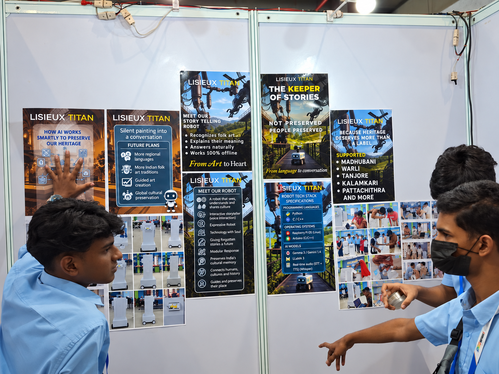
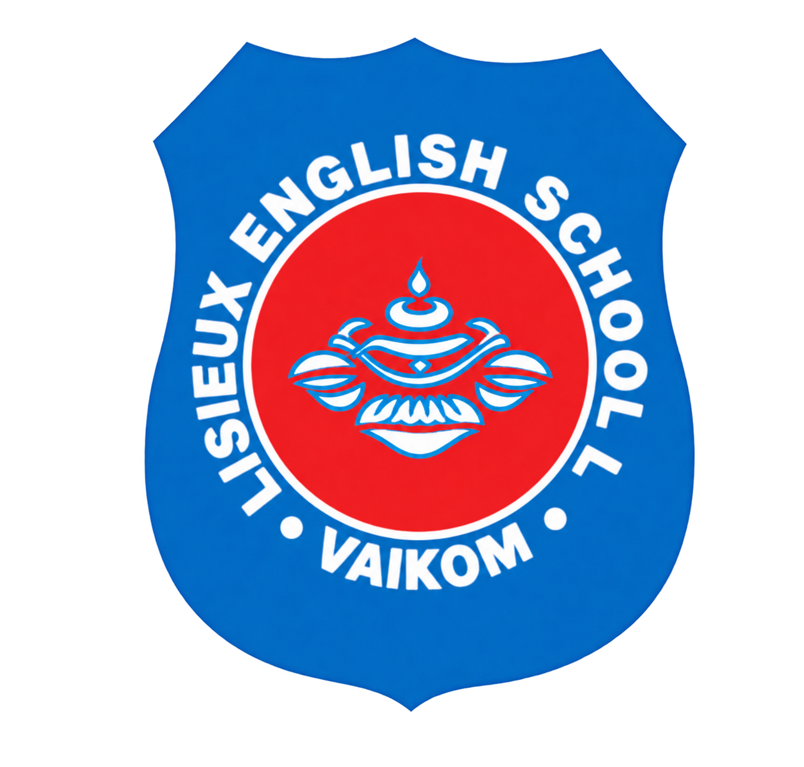

Madhubani
Stories in line and colour.
Some stories are displayed.
Others are discovered.
Giving culture
another voice.

An interactive cultural storytelling robot.
Created by students. Made for human curiosity.
A painting can hold the memory of a place. A pattern can carry a tradition. An object can tell us how someone, somewhere, once lived.
But when we only see the object, we can miss the people, the meaning and the world behind it. Keeping culture safe is only part of the work. We also have to keep it understood.
What if, instead of walking past a story,
you could ask it a question?
MEET YOUR MUSEUM COMPANIONA different way to experience culture:
by talking to it.
Keeper recognises the artwork a visitor is looking at, introduces the world behind it, and leaves room for the next question. More like a storyteller beside you than a plaque on a wall.
Recognise the artwork.
Connect it to history and meaning.
Give the story a voice.
Let curiosity lead the conversation.
Help that knowledge reach someone new.
Digital eyes. A screen for art. Arms, movement and a voice.
A student-built machine with a very human purpose.
A label tells you what something is.
A conversation gives you somewhere to go.
MITHILA, BIHAR · INDIA
A living tradition of line,
colour and storytelling.
YOU ASK
“What am I looking at?”
“This is Madhubani, a painting tradition from the Mithila region of Bihar. Its lines and colours carry stories of nature, everyday life and belief.”
FOLLOW YOUR CURIOSITY
An illustrative exchange, showing the kind of conversation Keeper was designed for. About the tradition ↗
Keeper was designed around Indian cultural and folk-art traditions. Each is a world of its own, shaped by the people who keep practising it.
Stories in line and colour.
A tradition carried by a community.
A place remembered through its art.
Stories that live on cloth.
Another way to tell a story.
A starting point, never the whole story.
Explore India’s living traditions ↗Culture stays alive when we understand it, question it and pass it on. Keeper’s purpose is to give it another voice, alongside the historians, artists, teachers and human storytellers who already carry it.
Keeper wasn’t built in a day.
And it didn’t begin at this size.
 FROM THE PROJECT ARCHIVE
FROM THE PROJECT ARCHIVEBefore Keeper could stand in an exhibition hall and tell a story, there was this: a small LEGO-based prototype that made an idea tangible.
It gave the team a place to experiment, make mistakes and learn. Every test made the next question a little clearer.
The first Keeper could fit on a table.
The next one stood beside us.
Months of making, refining and learning to explain why the project mattered.
What if a robot could stand beside a piece of culture and help someone understand it?
A small prototype put the idea into the team’s hands. Testing could begin.
Eyes, a display, arms, movement and conversation. Keeper became a machine people could approach.
Lisieux Titan presented Keeper, placed third at the regional competition and qualified for the National Championship.
Keeper travelled to GMR Arena for the WRO India National Championship, Future Innovators Senior.
Lisieux Titan finished seventh nationally. The result became part of a bigger story about what students can build around an idea they care about.
From a classroom idea to the national stage.

For Lisieux Titan, the theme was an invitation to look beyond what a robot could do and ask what it could help people discover.
Keeper arrived carrying that question, an evolving machine, and the work of a team from Vaikom.
Future Innovators
Senior category
A proud chapter.
Never the whole story.
Then came the real test: standing in front of people, showing artwork, answering questions and making the idea understood.

Behind every demonstration were hours of learning.
In front of it was someone with a new question.

LISIEUX ENGLISH SCHOOLVAIKOM, KERALA
Keeper of Stories was created by Lisieux Titan, from Lisieux English School in Vaikom, Kerala. Students learning, building, testing and carrying an ambitious idea from an early prototype to the WRO India National Championship.
The project is about human stories. This is one of them.
In a museum. At school. Beside a painting you have passed a hundred times without knowing what it means.
Systems inspired by Keeper could make cultural knowledge easier to encounter, giving visitors room to ask in their own way.
Museums 01
Heritage centres 02
Schools 03
Cultural exhibitions 04
Art galleries 05
Tourism spaces 06
Community archives 07
More regional languages. More local knowledge. Developed with the people whose stories are being told. The next step is a possibility to work towards, with care, rather than a promise already made.
“A story survives differently
when someone can ask it a question.”
We built a robot.
But Keeper was never only about robots.
Stories behind paintings.
Stories behind traditions.
Stories carried by generations.
Stories worth hearing again.
From art to heart.
LISIEUX TITAN · VAIKOM, KERALA · WRO 2026